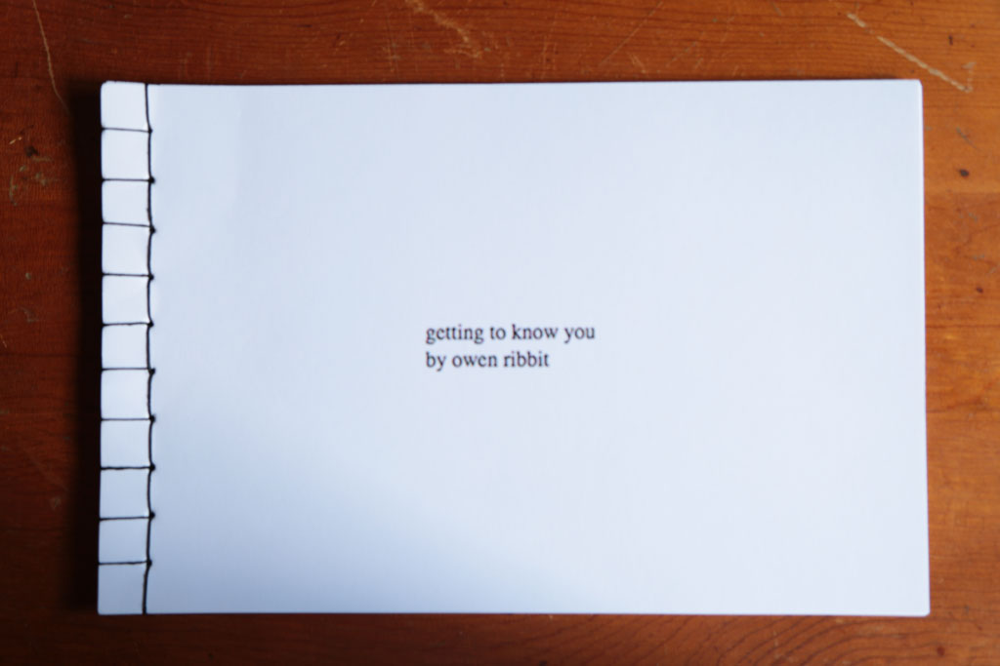
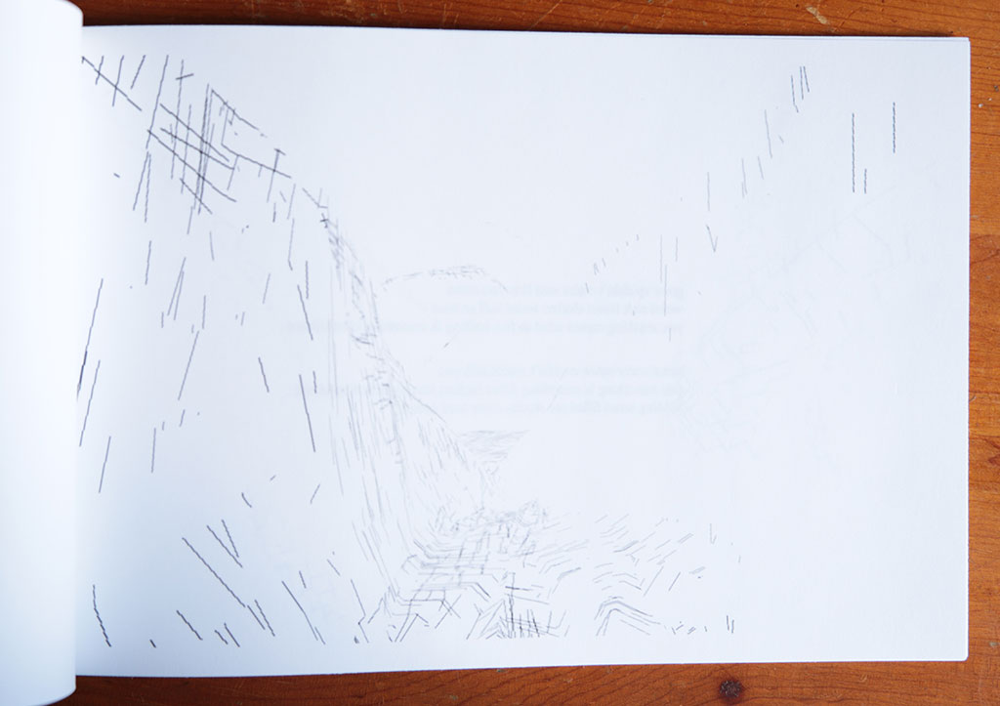
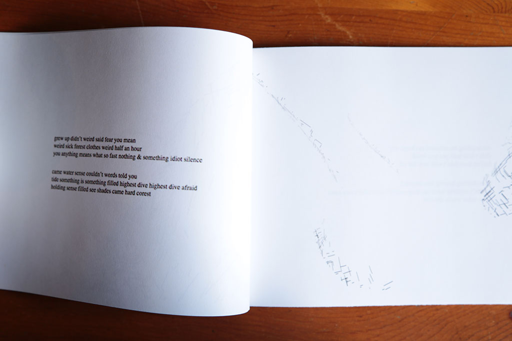
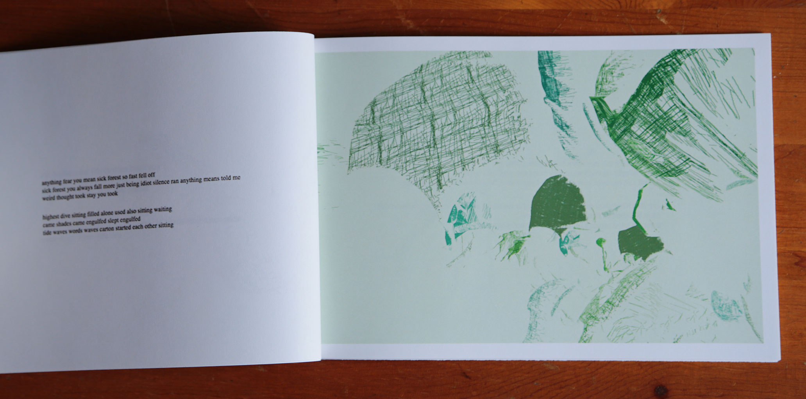
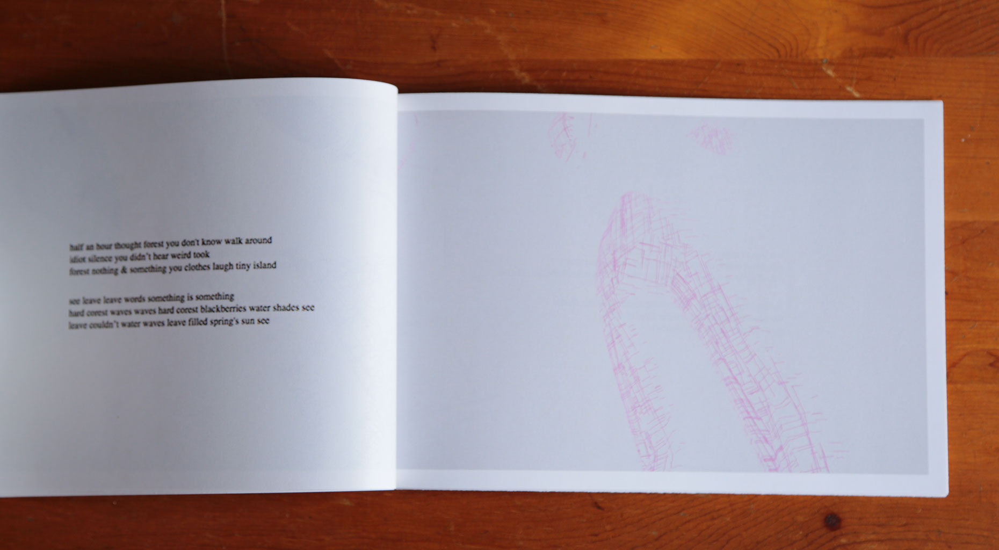

"getting to know you by owen ribbit" is a book I made based on my art game Getting To Know You. The app tells a story through the exploration of obscure and moving landscapes. The camera in the virtual world is mapped to the rotation of your device, so users must move around to make there way through the world. The objective of the game is to make it to the end of each level, where the user finds a new version of an algorithmically generated poem based on a poem that I wrote while exploring themes and ideas for the app. The book includes three screen captures of each level in the game and a new version on the poem on each page.
    